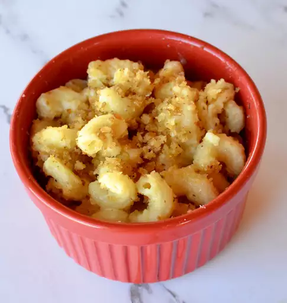

Mac & Cheese

Skip the boxed stuff and make homemade mac and cheese tonight. This from-scratch macaroni and cheese recipe will
become a staple in your dinner rotation.
Ingredients:
- Macaroni
- Butter and flour
- Milk
- Cheese
- Seasonings
- Bread crumbs
Steps:
- Boil the noodles
- Make the cheese sauce
- Make the topping
- Bake the mac and cheese